Install on Android Wear
You will find the reference documentation here.
Fun fact
You can use some of these methods with the Dexcom master app and AAPS.
Prerequisites⌁
Your watch needs to be compliant with Android Wear OS and bear the following logo:

Recent watches can be found here.
All Wear OS smartwatches are directly compatible with xDrip+ but Wear OS Google changes have made it more complex to install it.
Further Samsung and Google Wear OS 5 behavioral changes have made that even more complicated.
Wear OS versions⌁
Legacy Wear OS like 1.5 and 1.6 are now more complex to use with modern phones.
Wear OS 2 and 3 are fully supported.
Wear OS 4 and 5 might present challenges.
Wear OS 1.x⌁
Android 15
The old Android Wear 2.9 package is not compatible with Android 15.
Usually it's the Sony Smartwatch 3 (SWR50).
Method 1 (easiest)⌁
- Unpair the watch from your phone if it was already paired.
- Uninstall Wear OS from your phone if it is installed.
If you have other Android Wear watches connected you might need to pair them again. - Disable the Google Play apps auto-update feature.
- Install Android Wear 2.9.0.185084575 GMS.
- Open Android Wear and pair the watch, accept and allow everything: if you want to disable some features you'll do that when you're done with xDrip+ install.
- When pairing completes check your watch Google Play version is above 9.
Settings -> About -> Versions
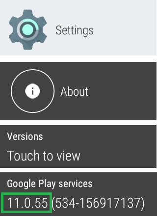
If it isn't: tap it 3 times to force update, and wait (up to hours).
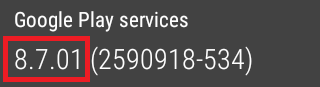 - Select an xDrip+ watchface on the phone Android Wear app
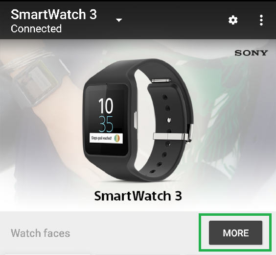
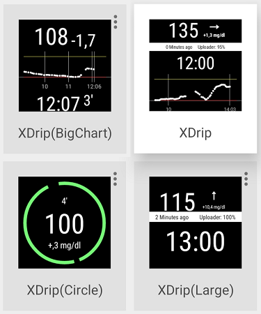 - Enable Google Play apps Auto-update and update manually to Wear OS.
Method 2 (with a computer)⌁
- Install Wear OS and pair the watch to your phone.
- Check your watch Google Play services version is above 9 (manufacturing default for latest firmware is 8.7).
Settings -> About -> Versions
If it is, you're done: see above how to select an xDrip+ watchface.
Else continue below. - Download a more recent version of Google Play services. Rename the file to a shorter name, like
GPS.apk. - Install ADB and sideload it to the watch.
Wear OS 2.x and 3.x⌁
Method 1 (easiest)⌁
This might not be always possible to complete this procedure, if it fails try Method 2.
- Unpair the watch from your phone if it was already paired.
- Uninstall Wear OS from your phone if it is installed.
If you have other Android Wear watches connected you might need to pair them again. - Disable the Google Play apps auto-update feature.
- Install an old version of Wear OS 2.51.0.398446042.gms.
- Open Android Wear and pair the watch, accept and allow everything: if you want to disable some features you'll do that when you're done with xDrip+ install.
- On the watch, open Settings, Aps & Notifications, App Info, System Apps and search Google Play Store. Select Remove Upgrades. Confirm. (Note the watch will automatically upgrade its app, you need to be fast once downgraded.)
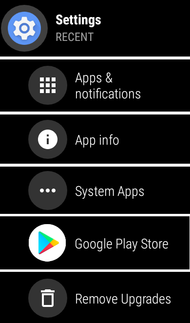 - On the watch, open Google Play Store and scroll to Apps on my Phone. Select and install xDrip+.
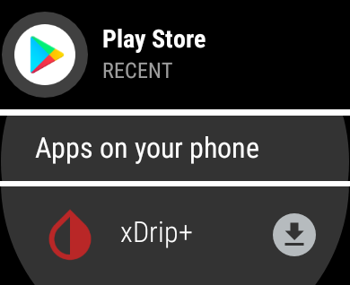 - Change the watchface to an xDrip+ one with a long touch on the current watchface.
Method 2 (best)⌁
Recommended: follow this video that details the process.
You need to be connected to Wi-Fi. So should your watch.
- Install Wear OS and pair your watch.
- Install and open Wear Installer 2 on your phone.
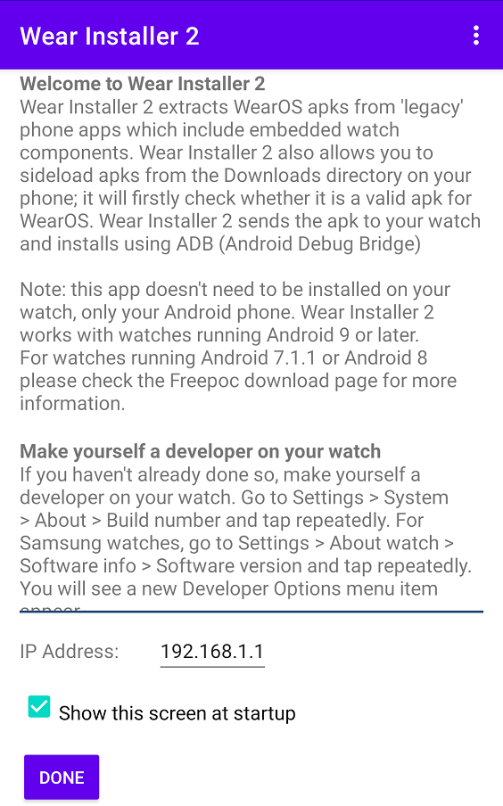 - Enable Developer mode on the watch (Instructions here. Only on the watch, then come back)
- Enable ADB Debug over Wi-Fi on the Watch.
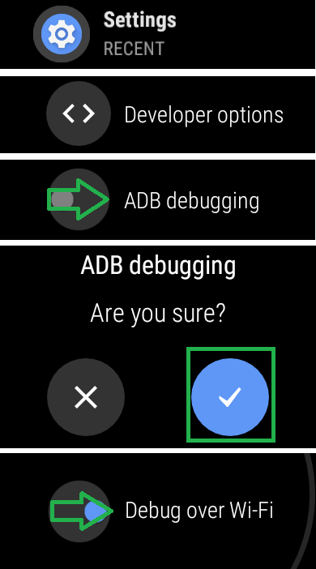 - Write down the watch IP address.
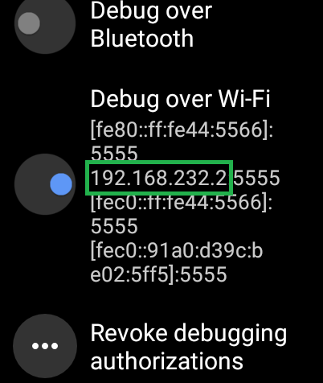 - Open the app on the watch and copy the IP address to the app on the phone.
TapeDone
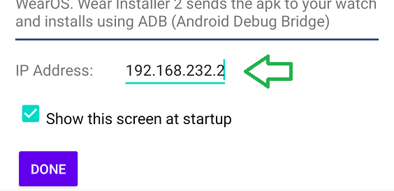 - Select xDrip+
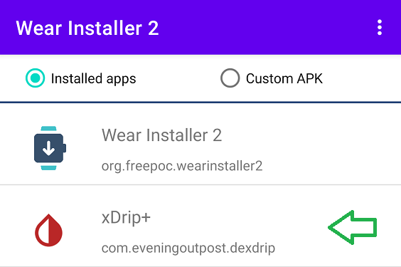
Wear Installer will extract the wear smartwatch apk.
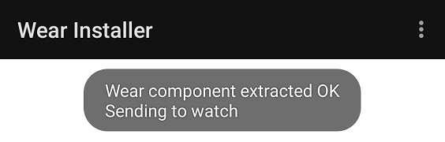
Make sure to accept debug authorisation on your watch if required.
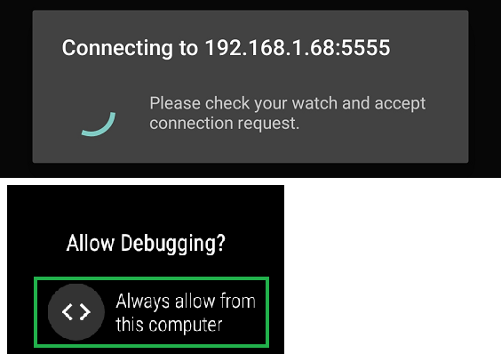 - Once ready, select
INSTALLand let the app do its work without interfering, it might take a few minutes to complete.
- Look for messages during the process but don't interfere.
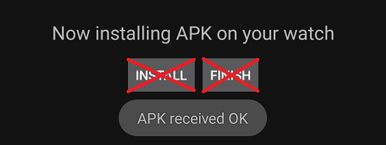 - When complete, select
FINISH.
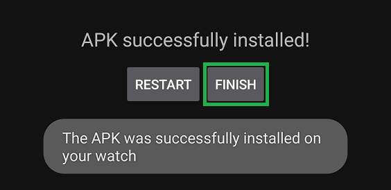 - If xDrip+ failed to install on the watch, try again.
Method 2 alternatives⌁
Use GeminiMan Wear OS Manager or Easy Fire Tools (similar to above).
Method 3 (with a computer)⌁
- Install ADB.
- Download xDrip+ on a computer and extract the APK (it's a zipped file).
It must be exactly the same version you have on your phone. - Browse the the
/res/rawfolder of the xDrip+ package and copy the fileandroid_wear_micro_apk.apkinto your ADB folder. - Sideload the xDrip+ wear extension to the watch.
Wear OS 5⌁
Google and Samsung have brought important changes to Wear OS 5 and do not easily allow custom watchfaces.
Installing the AAPS Watch Face has to be done with Wear Installer 2 following this video.
Accidental change of the Watch Face to another one requires the procedure above to be repeated.
Update xDrip+ on your watch⌁
Wear OS 1.x⌁
To force the watch app to update, just synchronize all apps.
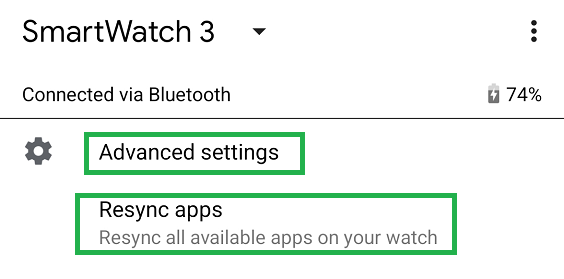
Wear OS 2.0 to 4.0⌁
You will need to uninstall and reinstall the wear app every time you want to update your phone xDrip+ in order to maintain the apps sync'ed.
Starting with April 13th 2021, xDrip+ can automatically update your wear version if you already have a compatible version installed (which is minimum Nightly build 13th Apr 2021).
For the updated version the instructions are as follows:
- Install the latest nightly xDrip WearOs component to the watch, eg using Wear Installer app, downgrading play store or via adb manually (see above).
- Make sure developer mode and wifi adb debugging are enabled on the Watch (see above: Wear OS 2 Method 2 step 4)
- Go to xDrip Prefs on the Watch, scroll till you see
Force Update- tap it - It should check ADB, and ask for authorization, select
Always Allow - Probably it will tell you ADB isn't working due to needing the authorization
- Go in to xDrip Prefs again on the watch and click Force Update
- This time it should say ADB looks good and then ask xDrip phone app to send the latest version
- This should download and then xDrip will install itself.
When the versions are identical this won't really do much, but this process can be used to force xDrip to send the latest version in future but it should also automatically detect version changes and update in the background. For fun you could install the latest nightly on the watch then downgrade your phone and check that the update process then downgrades your watch app version. The version information should be displayed next to the Force Update text.
The idea is that you no longer need to use Wear Installer or whatever method you used to install the first time around (eg PC based adb or downgrading play store) as xDrip can update itself.
Wear OS 5.0⌁
Reinstall the watchface with Wear Installer 2.